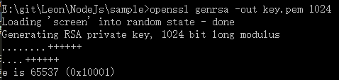

const crypto=require('crypto');
crypto模块包含了一系列基于OpenSSL库封装好的加密函数，包括hash,HMAC,cipher,decipher,sign and verify。你需要在编译 Node 的时候指定添加 OpenSSL 支持，才能使用本节介绍的方法。加密模块能使 Node 能够使用 SSL/TLS。
Hash类是一个创建数据的哈希摘要的实用库，它有两种使用方法：
hash.update()和hash.digest()方法来产生哈希摘要。哈希常用于几个重要的功能，比如把数据混淆以便于验证，或是为一个较大 的数据提供很小的校验。要在 Node 里使用哈希，需要调用工厂方法 crypto. createHash() 来创建一个 Hash 实例。它会返回指定哈希算法的 Hash 新实例，大 部分流行的算法都包含在内，具体支持哪种算法要看你安装的 OpenSSL 的版本，几 个常见的算法有：md5,sha1,sha256,sha512,ripemd160。
这些算法有各自的优缺点。比如 MD5 在许多应用里都会用到，但它有一些已 知的缺陷，包括碰撞问题。根据实际的应用需要，你可以选择广泛使用的算法 （如 MD5），或者更新的 SHA1（推荐使用），甚至是更少见但更健壮的算法（如 RIPEMD、 SHA256 或 SHA512）
作为流的Hash对象
const crypto=require('crypto');
const hash=crypto.createHash('sha256');
hash.on('readable',()=>{
var data=hash.read();
if(data){
console.log(data.toString('hex'));
//输出:4360773826139dd47d95effb8a8549a14e8436dedeed71ed5926c92153944306
}
});
hash.write("I'm Leon, let us to hash.");
hash.end();
使用Hash和piped数据流
const crypto=require('crypto');
const fs=require('fs');
const hash=crypto.createHash('sha256');
const input=fs.createReadStream('../../someJson.txt');
input.pipe(hash).pipe(process.stdout);
//输出：sz�-
���({';�S
��4ʕ�v�Y�+ ( 并不懂这些是什么鬼:) )
使用hash.update()和hash.digest()方法来产生摘要
const crypto=require('crypto');
const hash=crypto.createHash('sha256');
hash.update('leon');
console.log(hash.digest());
//输出<Buffer 15 34 cf 2a f7 6e cd 84 b8 03 01 0b 70 02 87 c0 04 46 59 9c 68 e8 d8 1b ef a9 c5 69 f0 3e 64 dd>
update 更新数据
hash.update(data[,encoding]);用data数据来更新hash内容，编码可以是'utf8','ascii'或者'binary'。如果不提供编码方式，data是一个字符串，则强制以'binary'编码。如果data是Buffer格式，则忽略编码方式。该方法在数据流中可以被调用多次，添加到哈 希对象的数据只是简单地追加到前一次传入的数据尾部，直到需要把它输出为止。在调用 hash.digest() 之后，就不可以再添加任何输入进去了。
hash.digest([encoding]);方法计算出所有内容的数据摘要，编码可以是'hex','binary'或者'base64'。如果提供了编码方式则返回一个字符串，否则返回Buffer数据。该方法只能被调用一次，多次调用会报错。
const crypto=require('crypto');
const hash=crypto.createHash('sha256');
hash.update('leon');
console.log(hash.digest('hex'));
//输出ab70e8a91550f6dd16b51a4e8c6c8f55e4dbe649c7caefa9f6e6f082e152cf6c
hash.update('sage');
//输出报错信息
TypeError: HashUpdate fail
at TypeError (native)
at Hash.update (crypto.js:70:16)
at Object. (E:\git\Leon\NodeJs\sample\hash.js:16:6)
at Module._compile (module.js:409:26)
at Object.Module._extensions..js (module.js:416:10)
at Module.load (module.js:343:32)
at Function.Module._load (module.js:300:12)
at Function.Module.runMain (module.js:441:10)
at startup (node.js:134:18)
at node.js:962:3
console.log(hash.digest());
//输出报错信息
Error: Not initialized
at Error (native)
at Hash.digest (crypto.js:77:23)
at Object. (E:\git\Leon\NodeJs\sample\hash.js:5:18)
at Module._compile (module.js:409:26)
at Object.Module._extensions..js (module.js:416:10)
at Module.load (module.js:343:32)
at Function.Module._load (module.js:300:12)
at Function.Module.runMain (module.js:441:10)
at startup (node.js:134:18)
at node.js:962:3
HMAC
HMAC 结合了哈希算法和加密密钥，是为了阻止对签名完整性的一些恶意攻击。这 意味着 HMAC 同时使用了哈希算法以及一个加密密钥。Node 提供的 HMAC API 和 Hash API 是一样的。唯一的不同是，创建 hmac 对象时需要在传入哈希算法的同时，再传入一个密钥。
创建 Hmac 对象需要的密钥可以是字符串，也可以是一个 PEM 编码的密钥，以字符串的格式传入。在命令行用 OpenSSL 可以轻松创建一个密钥。
这个例子创建的是一个 PEM 格式的 RSA 密钥，并保存在一个文件里（在本例中是 key.pem）。如果我们忽略 -out key.pem 参数，也可以在 Node 中使用 process 模块来直接调用同样的功能，在标准输出 中得到结果，否则，就需要从文件中读取密钥，然后再用来创建 Hmac 对象并生成摘要了。
//使用PEM格式的RSA密钥来创建Hmac摘要
const crypto=require('crypto');
const fs=require('fs');
const pem=fs.readFileSync('key.pem');
const key=pem.toString('ascii');
const hmac=crypto.createHmac('sha256',key);
hmac.update('foo');
console.log(hmac.digest('hex'));
//输出: 4aa9b57812fea1d4070245687dba7283ab59b3ff90a31767e4ff1669c06ba48d
这个例子用到了 fs.readFileSync()，因为在许多情况下，读取密钥会放在服务器启动任务中。
Hmac类是一个创建HMAC加密摘要的实用工具库，它可以有两种使用方式：
hmac.update()和hmac.digest()方法来产生HMAC摘要。crpto.createHmac()来创建Hmac实例。
使用Hmac对象作为流
const crypto=require('crypto');
const hmac=crypto.createHmac('sha256','secret');
hmac.on('readable',()=>{
var data=hmac.read();
if(data){
console.log(data.toString('hex'));
//输出:a753d7e1c8fbe9f53291fbb3460f7c52ee09367ee475df2e87554719acda7a7a
}
});
hmac.write("I'm Leon, let us to hash.");
hmac.end();
使用Hmac和piped数据流
const crypto=require('crypto');
const fs=require('fs');
const hmac=crypto.createHmac('sha256','secret');
const input=fs.createReadStream('../../someJson.txt');
input.pipe(hmac).pipe(process.stdout);
//输出：2�b��t;�27i\4j"�-��x��ܑ ( 我也不懂这些是什么鬼:) )
使用hmac.update()和hmac.digest()方法来产生摘要
const crypto=require('crypto');
const hmac=crypto.createHmac('sha256','secret');
hmac.update('leon');
console.log(hmac.digest('hex'));
//输出c2e333e478fa802d853e9d05f3802c68b823a85838410834f39414bd076ca0dd
hash.update(data[,encoding]);和hash.digest([encoding]);方法与Hash中一样。
公钥加密功能分布在如下 4 个类中：Cipher、Decipher、Sign 和 Verify。和加 密模块的其他类一样，它们也有工厂方法。Cipher 把数据加密， Decipher 解密数据，Sign 为数据创建加密签名，Verify 验证加密签名。
对 HMAC 操作，我们用到了私钥。对于本小节的操作，我们将同时使用公钥和私 钥。公钥加密算法需要一组配对的密钥：一个是私钥，由物主保存，用来解密和对 数据签名，另外一个是公钥，提供给第三方。公钥可以用来加密数据，并且只能让 私钥拥有者解读，或者用来验证数据是否被对应的私钥所签名。
让我们从刚刚生成来进行 HMAC 摘要的私钥中提取对应的公钥吧。Node 要求公钥按照证书格式，所以需要你提供额外的信息，但你也可以不填这些信息， 让其留空就行了。
//从私钥中提取公钥证书 openssl req -key key.pem -new -x509 -out cert.pem
我们让 OpenSSL 读取私钥，然后把公钥以 X509 证书格式输出到 cert.pem 文件中。 加密算法用到的密钥都要求是 PEM 格式的。
用Cipher加密crypto.createCipher('algorithm','secret')或者crypto.createCipheriv()方法输入一个算法和私钥创建一个Cipher实例，支持的算法从你安装的OpenSSL实现中支持的：blowfish或者aes192。许多现代的加密算法使用块密码，也就是输出的通常是标准大小的“块”。块大小与 使用的算法有关，如 blowfish 使用的是 40 字节的块。这当你使用 Cipher API 时 会明显看出，因为 API 总是使用固定大小的块。这种做法能够防止信息泄露给攻击者，如加密的信息或者是用来加密的特定密钥。
实例用来加密数据，这个类可以使用两种方式：
cipher.update()和cipher.final()方法来加密数据使用Cipher对象作为流
const crypto=require('crypto');
const cipher=crypto.createCipher('aes192','password');
var encrypted='';
cipher.on('readable',()=>{
var data=cipher.read();
if(data){
encrypted+=data.toString('hex');
}
});
cipher.on('end',()=>{
console.log(encrypted);
//输出:d23291d24de95b0c8f45d55596a080da161e3ab39de38ca5789c9a29c149e18c
})
cipher.write("some clear text data.");
cipher.end();
使用Cipher和piped数据流
const crypto=require('crypto');
const fs=require('fs');
const cipher=crypto.createCipher('aes192','password');
const input=fs.createReadStream('../../someJson.txt');
input.pipe(cipher).pipe(process.stdout);
//输出：��H%���
v�� �P���@�3\�ާ�����
����J�����#j2��R]����F�v�o��Yb�O�
ܳ '�l
EO�E%; b�G���ԥƉ�# ^3��t��� ��4�k1�/u
��#�3��f�o�_6�ʬ�L݆��d��j�ƀ��4N9w��Yt'F���ml�RU��q���ڰG
�e^U8̕�쀙��-k� %��F���Cye����[�ªC�@ĕ)��F���L�S;���^�z�.��y��"3
Ҝ�
使用cipher.update()和cipher.final()方法来产生摘要
const crypto=require('crypto');
const cipher=crypto.createCipher('aes192','password');
var encrypted=cipher.update('some clear text data','utf8','hex');
encrypted+=cipher.final('hex');
console.log(encrypted);
//输出d23291d24de95b0c8f45d55596a080dac609924387c7b1802fb79a4365a7ebe9
update 更新输入数据
cipher.update(data[,input_encoding][,output_encoding]);使用data更新cipher，输入编码方式有'utf8','ascii'或者'binary'，这时data数据应该被指定的格式编码。当data是Buffer，则input_encoding被忽略。
输出编码格式是加密后数据的格式，可以为'hex','binary'或者'base64'。如果指定output_encoding，则返回指定格式的加密数据，如果不指定，则返回Buffer。
cipher.update()可以在cipher.final()之前调用很多次，之后则会报错。
cipher.final([output_encoding]);返回所有的加密数据，同时添加足够的填充使其满足块大小格式。output_encoding参数可以为'hex','binary'或者'base64'。如果不指定，则返回Buffer。
cipher.final()方法只能被调用一次，多次调用会抛出错误。
cipher.setAutoPadding(auto_padding=true);当使用块加密算法时，Cipher自动填充输入数据到合适的块大小，取消自动填充为cipher.setAutoPadding(false);但当为块大小的非倍数时，抛出错误。该方法必须在final()前辈调用。
crypto.createDecipher('algorithm','secret')或者crypto.createCipheriv()方法几乎就是Cipher类的反面。
const crypto=require('crypto');
const fs=require('fs');
var pem=fs.readFileSync('key.pem');
var key=pem.toString('ascii');
var plain='data textarea';
var encrypted="";
var cipher=crypto.createCipher('blowfish',key);
encrypted+=cipher.update(new Buffer(plain),'binary','hex');
encrypted+=cipher.final('hex');
var decrypted="";
var decipher=crypto.createDecipher('blowfish',key);
decrypted+=decipher.update(encrypted,'hex','binary');
decrypted+=decipher.final('binary');
console.log(plain); //输出data textarea
console.log(decrypted); //输出data textarea
用Sign来创建签名
crypto.createDecipher('algorithm','secret')或者crypto.createCipheriv()方法几乎就是Cipher类的反面。
const crypto=require('crypto');
const fs=require('fs');
var pem=fs.readFileSync('key.pem');
var key=pem.toString('ascii');
var plain='data textarea';
var encrypted="";
var cipher=crypto.createCipher('blowfish',key);
encrypted+=cipher.update(new Buffer(plain),'binary','hex');
encrypted+=cipher.final('hex');
var decrypted="";
var decipher=crypto.createDecipher('blowfish',key);
decrypted+=decipher.update(encrypted,'hex','binary');
decrypted+=decipher.final('binary');
console.log(plain); //输出data textarea
console.log(decrypted); //输出data textarea
http://nodejs.cn/api/crypto.html#crypto_class_cipher
//调用dns.resolve()
返回的结果就是通过DNS服务器查询出的IP地址，列表中的每一个值都可以访问到相同的网站。
还有些方便的方法可用来处理前面列出的各种记录类型。比如，除了调用 resolve ('example.com', 'MX', callback) 以外，你还可以调用 resolveMx('example. com', callback)。API 还提供了 resolve4() 和 resolve6() 方法， 分别用来解析 IPv4 和 IPv6 地址。
var dns=require('dns');
dns.resolveMx('yahoo.com',function(e,r){
if(e){
console.log(e);
}
console.log(r);
//输出(应该是路由路径？)
[ { exchange: 'mta5.am0.yahoodns.net', priority: 1 },
{ exchange: 'mta6.am0.yahoodns.net', priority: 1 },
{ exchange: 'mta7.am0.yahoodns.net', priority: 1 } ]
})
dns.resolveTxt('yahoo.com',function(e,r){
if(e){
console.log(e);
}
console.log(r); //输出[ [ 'v=spf1 redirect=_spf.mail.yahoo.com' ] ]
})
lookup 查询路径
dns.lookup(hostname[,options],callback)方法将主机名解析出第一个找到的IPv4或者IPv6地址记录如果你没有传入地址，它会默 认是网络设备接口的当前设置。。其中options可能是一个对象或者整数，如果指定4或者6，则只会返回相应的IP地址，如果不设置，则IPv4和IPv6都可以。options也可以作为一个对象，包含的属性(所有的均为可选项)有：
{
family:4,
//可选4||6||空，不设置时，IPv4和IPv6都可以。
hints:dns.ADDRCONFIG | dns.V4MAPPED,
//dns.ADDRCONFIG 只返回当前系统支持的地址类型，不包括本地环回地址
//dns.V4MAPPED 当定义返回IPv6但查询为空时，返回映射得到的IPv4地址
all:false
//当为true时，返回所有解析地址，默认为false，返回一个单一地址
}
callback(err,address,family)回调函数中，address为返回的地址数组，family为lookup时设置的方式(4||6)。当设置为all:true时，回调函数也变成callback(err,addresses)。
//lookup查询单个记录
dns.lookup('yahoo.com',4,function(e,a){
console.log(a); //输出98.139.183.24
})
reverse
dns.reverse(ip,callback)执行一个DNS查询并且解析IP地址到一个主机名数组。callback(err,hostnames),返回值为一组给定的ip。
dns.resolve('yahoo.com','A',(e,a)=>{
console.log(a); //输出[ '98.139.183.24', '206.190.36.45', '98.138.253.109' ]
for(i in a){
dns.reverse(a[i],function(e,host){
console.log(host);
//输出
[ 'ir2.fp.vip.bf1.yahoo.com' ]
[ 'ir1.fp.vip.ne1.yahoo.com' ]
[ 'ir1.fp.vip.gq1.yahoo.com' ]
});
}
})
dns.resolve('google.com','A',(e,a)=>{
console.log(a); //输出[ '216.58.197.110' ]
for(i in a){
dns.reverse(a[i],function(e,host){
console.log(host);
//输出[ 'hkg12s01-in-f14.1e100.net' ]
});
}
})
(err,data)=>{...}一样可以作为回调函数的表达方式。在例子中得到的域名都是可达的，不过是我们输入域名的具体主机名。
http://nodejs.cn/api/dns.html#dns_dns_resolve_hostname_rrtype_callback